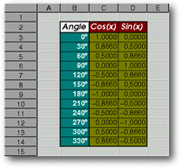
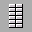
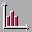

<!-- Documentation XQuad (c)1995-2000 AXENE contact axene@axene.org>
<html>

<head>
<title>Dialog Box: Graph Configuration</title>
</head>

<body BGCOLOR="#FFFFFF" BACKGROUND="Images/back.gif" TEXT="#000000">

<p ALIGN="right">  </p>

<p><a NAME="geometry">The <i>Graph Configuration</i> dialog box selects the area of the
cell region to act as a data source in the calculation of a graph. The geometry of the
cell region will correspond to series divisions within that region and the presence of
titles, series names, and/or x-axis labels. To access this dialog box, at least one
graphic frame must be selected in the worksheet, then click on the </a><a
HREF="HBar_Graphics.html#setup_icon">last button</a> in the fourth section of the
horizontal <i>Graphic Manipulation</i> toolbar, or select the &quot;<a
HREF="Menu_Graph.html">Graphing tool</a> / <a HREF="Menu_Graph.html#setup_menu_entry">Configuration</a>&quot;
entry in the menu bar.</p>

<p><br>
</p>

<p><a NAME="terminology"><b>Terminology:</b></a> </p>

<p>Given the following portion of a worksheet:</p>

<p align="center"> </p>

<p align="center"><i>Screen snap: portion of a worksheet.</i> </p>

<p>To create a graph from this portion of a table, select the cell region B2:D14 as data
source for the graph. In this table , the zone of values to be reported in the graph is
the region C3:D14. This region must be cut into <strong>two series of 12 values</strong>:
the regions C3:C14 and D3:D14. The series break is done by <strong>columns</strong>. C2
and C3 cells are <strong>series names</strong>. The B2 cell is the <strong>title or name
of the graph</strong>. The cell region B3:B14 are <strong>X-axis names or titles</strong>.</p>

<p><br>
</p>

<hr>

<p><br>
</p>

<p align="center"> <br>
<small><i>Screen snap: Graph Configuration dialog box</i></small></p>

<p><br>
</p>

<hr>

<p><br>
</p>

<h3>Left Portion of the Dialog Box:</h3>

<ul>
  <li> <a NAME="column_button">The
    <i>Columns</i> button indicates that the values of a data set are taken from one column.
    In the example, the series must be read from one column in order to obtain a relevant
    graph.</a><br>
    &nbsp;</li>
  <li> <a NAME="row_button">The <i>Rows</i>
    button indicates that the values of a data set are taken from one row. In the example, the
    series must be read from one row in order to obtain a relevant graph.</a><br>
    &nbsp;</li>
  <li> <a
    NAME="absc_label_button">The X<i>-axis labels</i> button indicates that the first column
    of the cell region contains x-axis labels. If the series are read as rows, this button
    indicates that the first row contains x-axis lablels. In the example this button would be
    selected. To create this graph XQuad will consider the first column to be read as the
    first data set, because this column contains numbers. (Region B3:B14)</a><br>
    &nbsp;</li>
  <li> <a NAME="col_data_button">The
    <i>First Data Set</i> button indicates that the first column of the selected cell region
    contains the values for the first data set. If the series are read as rows, this button
    indicates that the first row contains the values of the first data set. When this button
    is selected, neither the X-axis nor the graph itself have a label.</a><br>
    &nbsp;</li>
  <li> <a NAME="legend_button">The
    <i>Legend text</i> button indicates that the first row of the cell region contains series
    names. If the series is read in rows, this button indicates that the first column contains
    series names. In the example, the first line (region C2:D2) contains the titles of two
    series, therefore this button would be selected.</a><br>
    &nbsp;</li>
  <li> <a NAME="row_data_button">The
    <i>First Data Set</i> button indicates that the first row of the cell region contains the
    first values of the data-set. If the series are read in rows, this button indicates that
    the first column will contain the first values of the data-set. When this button is
    selected, neither the series nor the graph itself have labels.</a></li>
</ul>

<p><br>
</p>

<h3><a NAME="preview_area">Right Portion of the Dialog Box:</a></h3>

<p>This portion contains a graphic preview with current parameters as selected in the left
portion of the dialog box.</p>

<p><br>
</p>

<h3>Lower Portion of the dialog box:</h3>

<ul>
  <li><a NAME="ok_button"><i>OK</i> accepts changes to graph configuration parameters and
    closes the box.</a><br>
    &nbsp;</li>
  <li><a NAME="cancel_button"><i>Cancel</i> closes the box without modification to the graph
    configuration.</a></li>
</ul>

<p><br>
</p>

<hr>

<p ALIGN="right"></p>
</body>
</html>
